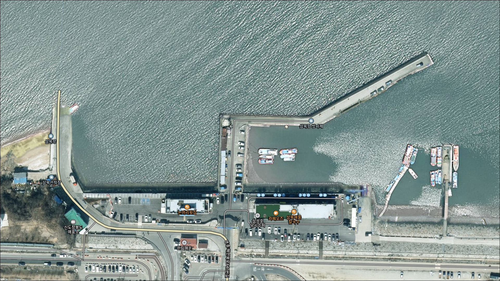
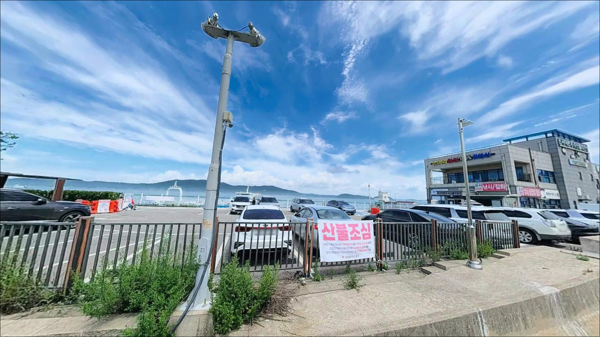
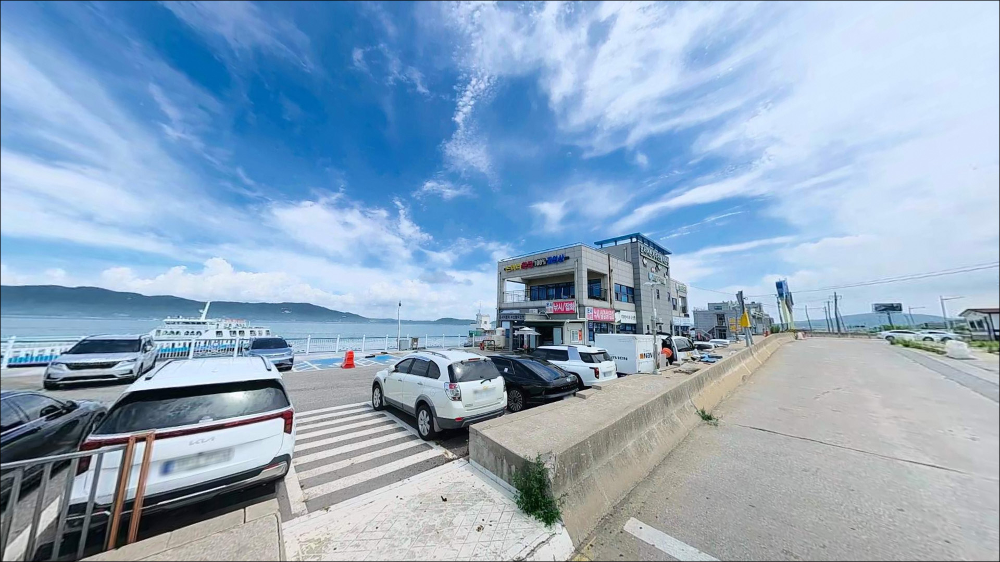
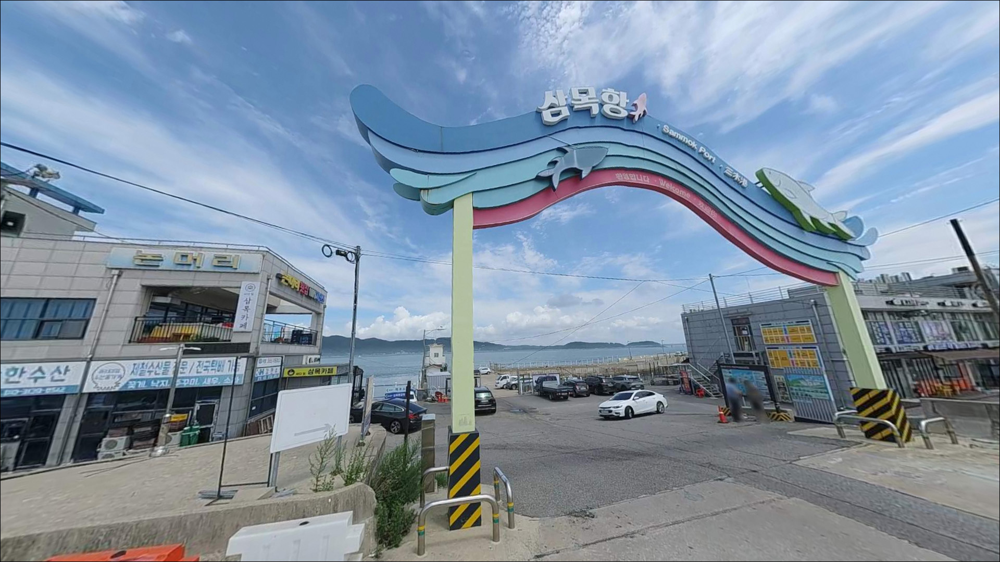
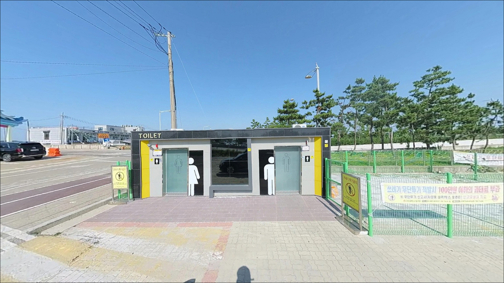
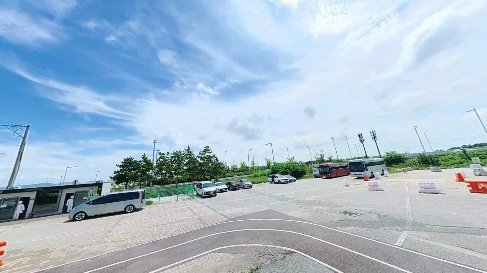
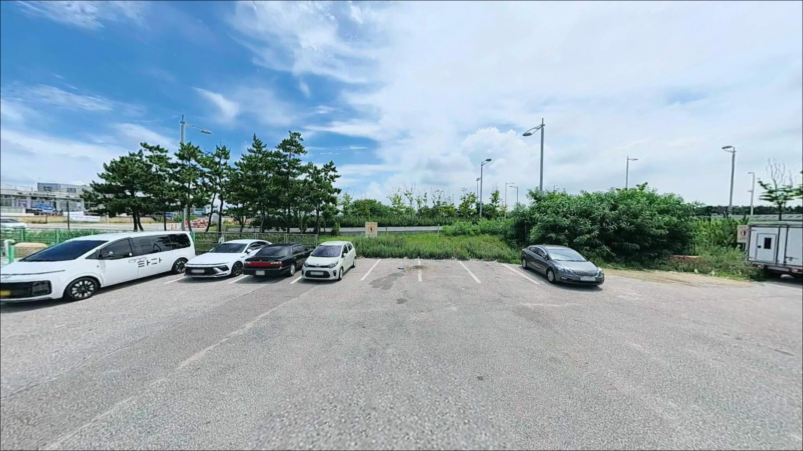
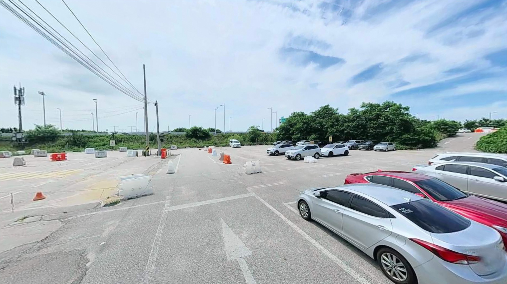
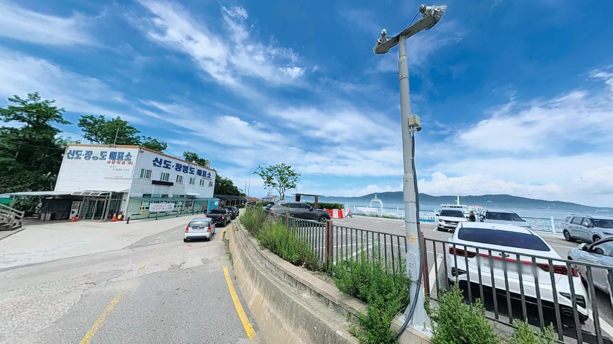

삼목항방파제, 삼목항, 영종도 인천 중구 고요함이 매력인 차박, 낚시 감성 장소
이 페이지에는 광고(제휴 링크 포함)가 있으며, 광고 링크를 통해 구매하면 운영자가 판매 수익 또는 수수료를 받을 수 있습니다. 포인트 사진: 카카오맵 스카이뷰·로드뷰. 이 페이지의 지도·사진 이미지는 카카오맵의 실제 서비스 이미지와 다를 수 있습니다.


포인트 안내
삼목항 방파제
인천광역시 중구 운서동 2827-1
물때 확인 없이 삼목항 방파제를 찾으면
간조 시 넓은 갯벌만 드러난 수면을
마주하게 됩니다.
서해 조수간만의 차가 큰 영종도 북측 특성상
썰물이 진행 중인 시간에 도착하면
원투채비가 닿을 수심 자체가 확보되지 않는
상황이 됩니다.
들물이 시작되는 타이밍과 만조 전후를
맞추고 도착하는 것이
이 포인트의 첫 번째 판단 기준입니다.
나머지 진입 여건과 낚시 조건은
그다음에 생각해도 늦지 않습니다.
이 글은 삼목항 방파제의
진입 여건, 물때별 낚시 조건,
주변 인프라, 대안 포인트 이동 동선에 집중합니다.
조황 단정이나 특정 어종 보장은
이 글의 범위에 포함되지 않습니다.

1. 진입 동선과 포인트 접근성
삼목항은 영종국제도시와 접해 있어
공항신도시 방향에서 이어지는 포장도로가
선착장 앞까지 연결되어 있습니다.
경사나 비포장 구간이 없는 평탄한 구조로
승용차부터 대형 SUV까지 접근에
큰 어려움은 없는 편입니다.
네비게이션에 "삼목선착장" 또는
"삼목여객터미널"을 입력하면
항구 앞까지 안내됩니다.
주차는 항구 공영주차장과
선착장 인근 공터를 활용하는 방식이 일반적입니다.
방파제 위에 차량이 직접 올라가는 구조가 아니므로
주차 후 도보로 진입하게 됩니다.
항구 내 도로 폭이 넓은 편이라
회차 자체는 어렵지 않지만,
주말과 연휴에는 횟집타운 방문객과
낚시인이 겹쳐 오전 일찍 도착하지 않으면
주차 자리 확보가 어려울 수 있습니다.
선착장 내부는 신도·장봉도를 잇는
여객선이 수시로 왕래하는 공간입니다.
어선 접안 구역과 여객 통로를 막지 않는
자리에 주차하는 것이 기본입니다.

2. 차박 환경과 야간 체류 여건
삼목항 주변은 횟집타운과 선착장 시설이
인접해 있어 야간에도 조명이 유지되는 편입니다.
방파제 초입 쪽은 조명이 있고
차량 왕래도 간헐적으로 이어져
완전한 정적을 기대하기는 어려운 환경입니다.
방파제 끝단 쪽으로 갈수록 광원이 줄어드므로
야간 이동 시 헤드랜턴은 필수 장비입니다.
영종도 북측 해안에 개방된 지형 특성상
북서풍이 강한 계절에는
방파제 위에서 체감 바람이 세집니다.
겨울철 야간 체류를 계획한다면
기상청 풍속·파고 예보를 먼저 확인하는 것이
출조 전 가장 기본적인 판단 기준입니다.
선착장 특성상 주말이나 성수기에는
유동인구가 많아 프라이버시 측면에서
기대치를 낮추는 편이 현실적입니다.
차박을 메인 목적으로 삼기보다
낚시 후 단기 대기 기지로 활용하는 방식이
이 포인트 환경에 맞습니다.


3. 주변 편의시설 및 인프라 현황
삼목항 인근에는 어촌계 횟집과 식당이
항구 인근에 형성되어 있습니다.
낚시 전후 식사 여건은 이 포인트의
장점 중 하나입니다.
영종국제도시와 가까운 위치 덕분에
편의점과 주유소 등 기본 인프라는
반경 3km 이내에서 이용할 수 있는 편입니다.
낚시 전용 미끼나 채비를 준비할 낚시점은
만정 방향으로 약 8~9km 거리에 위치해 있습니다.
현장 도착 후 생미끼나 채비를
따로 구하기가 쉽지 않으므로
원투채비, 봉돌, 여분 바늘, 생미끼 등은
출발 전에 충분히 갖춰두는 것이 좋습니다.

4. 방문 전 반드시 챙겨야 할 준비사항
삼목항 방문에서 가장 먼저 확인할 것은
물때입니다.
서해는 조수간만의 차가 크기 때문에
만조와 간조 사이 낚시 여건의 차이가
상당합니다.
바다타임에서 운서동 기준 물때를 확인하고
초들물과 만조 전후 타이밍을
출발 시각에 맞추는 것이 기본 전략입니다.
방파제 낚시 시 여객선 항로 방향으로
무리하게 채비를 보내는 것은
선박 운항에 방해가 됩니다.
자리를 잡기 전에 항로 방향을 먼저 파악하고
그 방향을 피해 캐스팅 방향을 정하는 것이
기본 매너이자 안전 수칙입니다.
석축 구간은 이끼로 미끄러울 수 있어
구명조끼와 안전화는 기본 장비입니다.
원투낚시 위주 포인트인 만큼
원투채비와 봉돌을 넉넉히 챙기는 편이 좋습니다.
서해 밑걸림 구조상 채비 손실이 생길 수 있어
여분 준비는 조금 넉넉히 하는 편이 낫습니다.
기상청 서해 풍속·파고 예보는
출발 당일 아침에 다시 한번 확인하는 것이
허탕을 막는 조건입니다.

5. 삼목항 방파제 지형이 낚시 여건을 결정하는 이유
삼목항 방파제는 선착장 옆으로 이어지는
외항 방향의 구조입니다.
방파제 전체가 콘크리트 발판으로 이루어져 있어
발을 딛기 편한 편이며,
내항 쪽은 어선 통행이 잦아
낚시 공간이 제한적입니다.
외항 방향 끝단 구간이
조류 흐름과 수심 변화를 동시에 갖춘
핵심 포인트 구간입니다.
서해 특성상 간조 시에는 갯벌이 드러나고
만조 시에 수심이 올라오면서
연안 어종이 방파제 주변으로 접근하는
패턴이 형성됩니다.
원투낚시의 실질적 여건은 만조 전후에 집중되며,
초들물이 흐르기 시작하는 타이밍부터
입질 빈도가 올라오는 구조입니다.
항구 입구와 방파제 끝단은
조류 흐름이 상대적으로 강하게 형성되는 구간입니다.
조류를 타고 흘러오는 먹이를 쫓아
어종이 모이는 구조이므로
원투로 먼 곳을 노리거나
채비를 조류에 실어 보내는 방식이
이 포인트 지형과 잘 맞습니다.
최신 조황은 가기 전에 꼭 검색해 보시기 바랍니다.


6. 포인트에 어울리는 낚시 스타일
삼목항 방파제를 대표하는 장르는 원투낚시입니다.
외항 방향으로 멀리 채비를 보내면
망둥어와 가자미를 기대해볼 수 있는
지형 조건을 갖추고 있습니다.
망둥어는 12월부터 이듬해 3월 사이
씨알이 가장 굵어지는 경향이 있으며,
가을 시즌은 마릿수 위주 낚시가 가능합니다.
루어낚시도 시도해볼 만한 스타일입니다.
방파제 외항 물돌이 구간과 끝단 주변에서
농어가 회유할 가능성이 있어
미노우나 바이브레이션 계열 루어를
연안 쪽으로 흘리는 방식을 써볼 수 있습니다.
조류가 살아있는 들물 타이밍이
루어 반응이 올라오는 조건입니다.
숭어 훌치기낚시는 가을에서 이른 봄 사이
영종도 일대 방파제에서 즐길 수 있는 스타일로,
삼목항 방파제에서도 숭어 무리가 접안하는
시기에 함께 노려볼 수 있습니다.
찌낚시는 만조 시 석축 주변에서
우럭과 노래미를 대상으로
가벼운 채비로 운영하는 방식이 어울립니다.

7. 대안 포인트와 플랜 B 동선
삼목항 방파제 상황이 여의치 않을 때
첫 번째 이동 후보는
예단포 방파제입니다.
영종도 북쪽으로 4~5km 거리에 위치하며
200m 안팎 길이의 방파제 구조로
원투낚시와 루어낚시를 병행할 수 있습니다.
조류 흐름과 수심 환경이 삼목항과 달라
대안으로서 의미가 있는 포인트입니다.
구읍뱃터는 삼목항 남동쪽 방향에 위치하며
농어 루어낚시로 알려진 포인트입니다.
망둥어·숭어도 거론되는 곳으로
삼목항과 함께 묶어
이동 낚시 동선으로 돌아보기 좋습니다.
영종진 해변은 원투낚시 포인트로 분류되며
망둥어, 농어, 우럭 등 어종 구성이
삼목항과 비슷한 편입니다.
조용한 환경에서 낚시와 단기 체류를
함께 원한다면 이쪽이 더 잘 맞을 수 있습니다.
다만 야영 허용 여부는 방문 전 현장 확인이 필요합니다.

원투낚시와 서해 물때,
두 가지를 맞추면 삼목항이 달라집니다
서해 방파제 원투낚시를 즐기는 낚시인이라면
삼목항 방파제의 환경은 잘 맞는 구조입니다.
수도권에서 당일치기로 접근하기 좋고,
평탄한 콘크리트 발판으로
장비 운반이 편하며,
겨울철 씨알 굵은 망둥어부터
루어에 반응하는 농어까지
다양하게 기대해볼 수 있는 여건입니다.
다만 물때 확인 없이 방문하거나
주말 오전 늦게 도착해
주차 자리를 잡지 못하면
낚시를 시작조차 못하는 상황이 생길 수 있습니다.
물때 확인, 이른 도착, 여분 채비 준비,
이 세 가지를 갖추고 간다면
서해 방파제 낚시의 기본을 충분히
즐길 수 있는 포인트입니다.
차박을 메인으로 원한다면
영종진 해변 쪽을 먼저 알아보고,
삼목항은 낚시 후 방파제 옆 횟집에서
마무리하는 당일 출조 루트로 엮는 방식이
이 권역을 가장 효율적으로 쓰는 방법입니다.